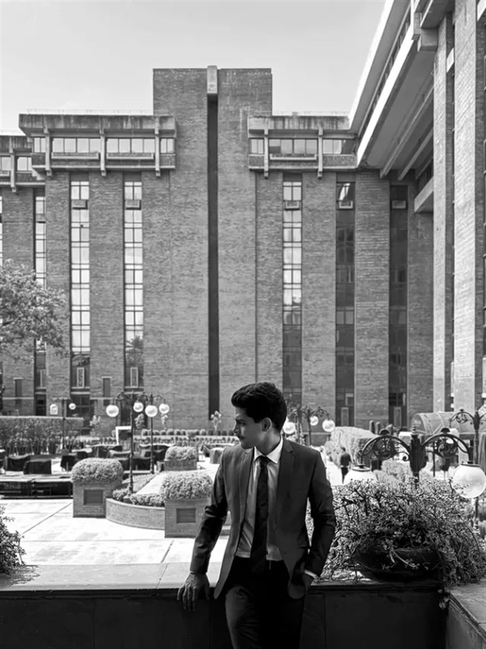

Tracto
A health companion designed with and for older adults — walks, pills, and doctor visits without the maze. Book a doctor in 3 taps.
View caseI study what makes products matter — the psychology, the flow, the small decisions that make people care.
A health companion designed with and for older adults — walks, pills, and doctor visits without the maze. Book a doctor in 3 taps.
View caseRebuilt Specscart's lens checkout into a prescription-first flow — decision fatigue out, structural error-proofing in. Zero incompatible selections possible.
View caseDrawn to the space between technology, design and business.

C, C++, Java, Python, MERN — web dev, blockchain, AI. But I was always more drawn to the strategy behind what to build than the building itself.
Built Salesforce Lightning apps — and got more curious about the people using them than the code running them.
Learned it from scratch — and came out with a deep understanding of both the product and the person using it.
Currently pursuing an MBA in Marketing to apply my user and product instincts to product strategy.
Something new is in the works — it lands here the day it stops being a draft.
No sign-ups, no tracking.
Genuinely — every note here gets read. Thanks for taking the time.